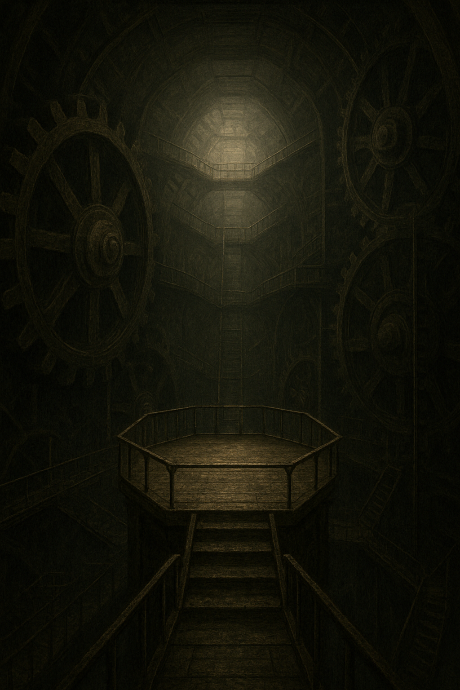

Du stehst im Herzen des Turms. Zahnräder drehen sich überall um dich herum. Leitern und Brücken führen in alle Richtungen, bei manchen Wegen scheint der tod gewiss, bei anderen nicht so sehr. Das vibrieren und Ticken ist hier so stark, dass dein Herz bei jedem Schlag kurz aussetzt.
Du wählst die zwei vielversprechendsten Pfade aus und siehst dich nun vor einer Entscheidung: